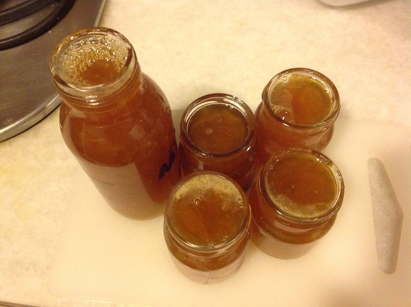

Banana Jam

This tropical jam is loosely based on Jill Norman's recipe, with modifications for my family's taste.
Perfect for holiday brunch.
Ingredients
- Bananas: 3
- Lemon: 1
- Cane sugar: 160g
- Dark rum: 1 tbsp
Steps
- Peel a lemon with a vegetable peeler and julienne the zest. Squeeze the lemon juice.
- Boil the zest and discard the water.
- Peel the bananas. Place them in a saucepan with the sugar, lemon zest and lemon juice.
- Mash everything and cook until thick.
- Add the rum.
- Pour into a sterilized jar and close the lid.